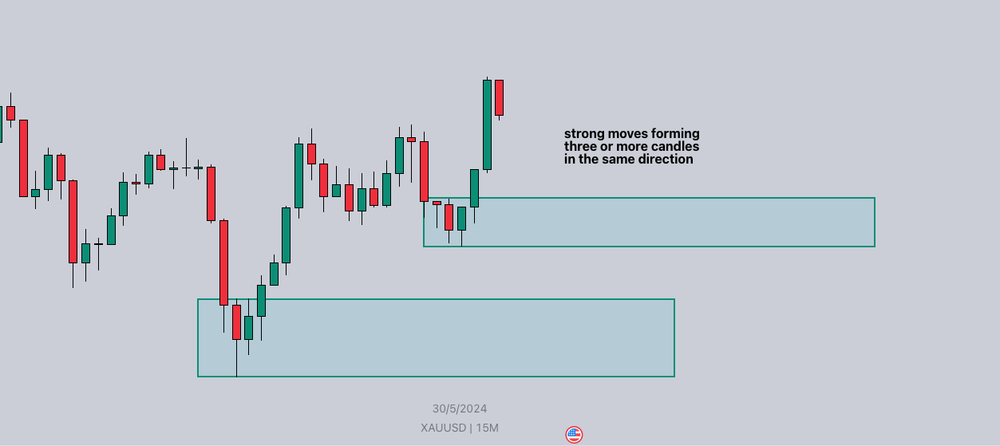
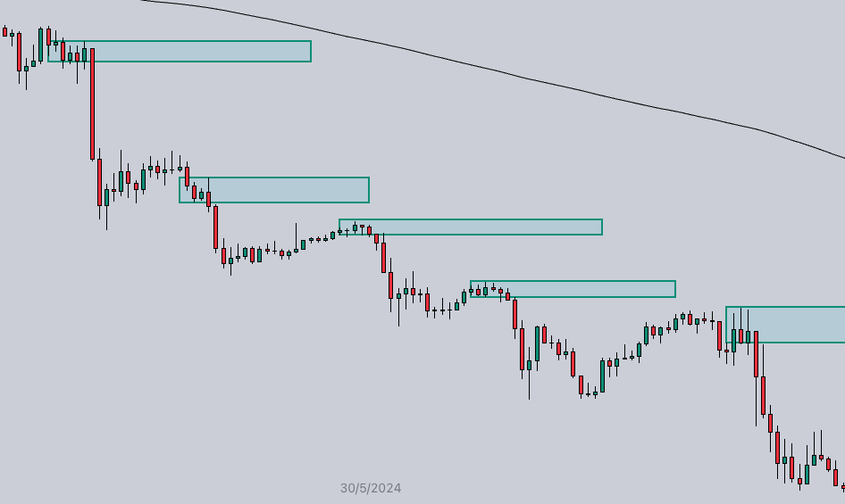

Supply and demand occures on a chart where you have strong pushes indicating a lot of volume has just pushed price away from an area. The area price is moving from is either your supply or demand zone.
Demand zones form at the bottom of a move.
In this picture, you can see the two points where price pushed up with significant force to the upside. The zones drawn near the bottom of those pushes are considered demand zones.
Supply zones form at the top of a move.
In this picture, you can see the two points where price pushed down with significant force to the downside. The zones drawn near the top of those pushes are considered supply zones.
In the video below, I'm going to go over a few examples of supply and demand zones on actual charts.